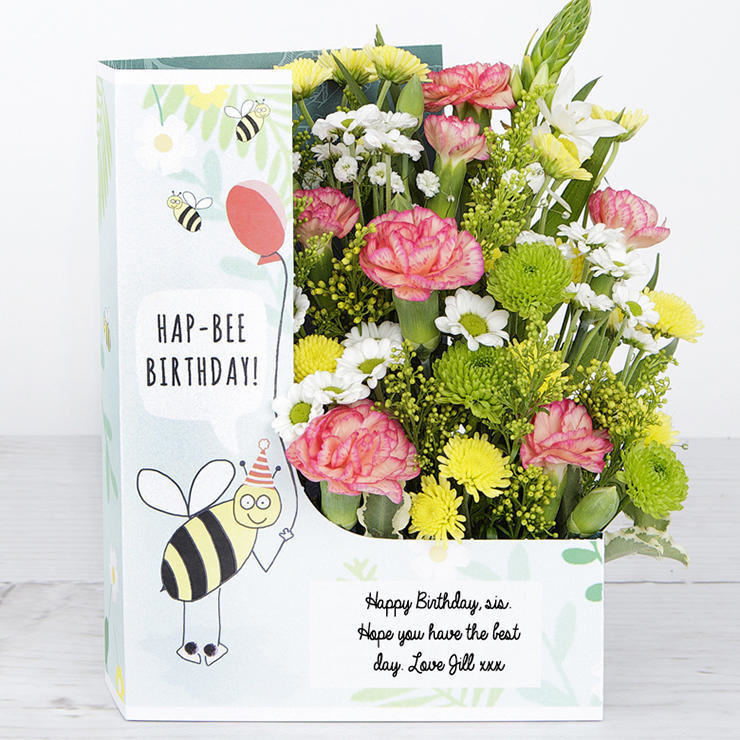

A beautiful bouquet of flowers is a wonderful gift to give and receive. We can make many different types of people happy with the gift of flowers. Despite varying kinds of personalities, relationships, gender or age, one can rarely make a mistake by sending birthday flowers accompanied by a lovely message in a card. It is wonderful to be able to choose flowers according to the knowledge you have of the person you’re choosing flowers for. It makes the bouquet unique and well-suited to the recipient.
Take the beautiful bunch of flowers a level even higher by letting the bunch be accompanied by a thoughtful message in a card. The message inside the card will explain the gift, and make the recipient feel even more special when reading the kind birthday wishes. The card will live on after the flowers, and will be a reminder of the glorious gift for a long time.
If you want to say something when you sending flowers for special days as Valentines Day, Women's Day, Mother's Day,
We operate in Pihtiputaa in the same premises as Mononen's funeral service.
